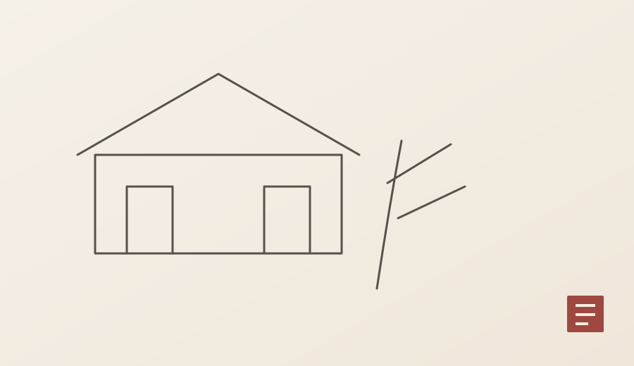
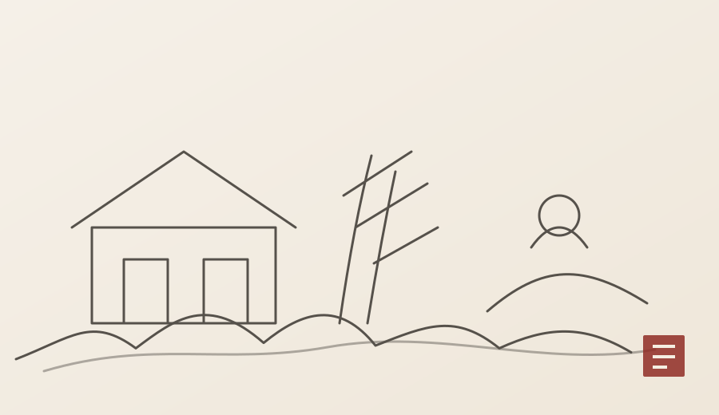
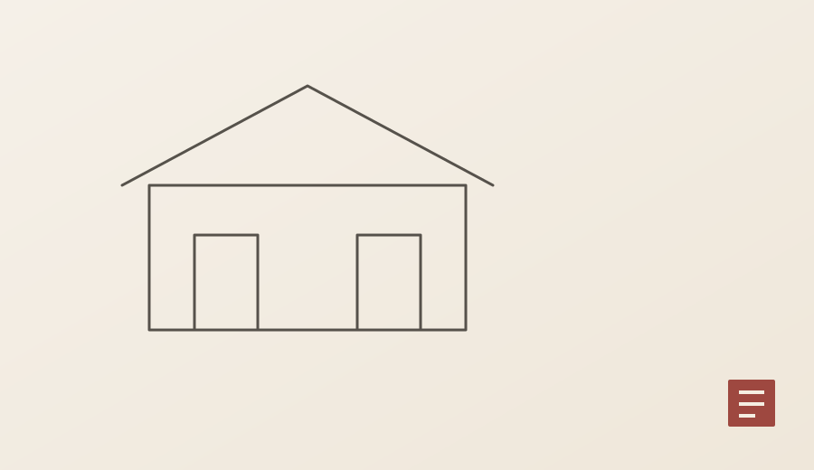
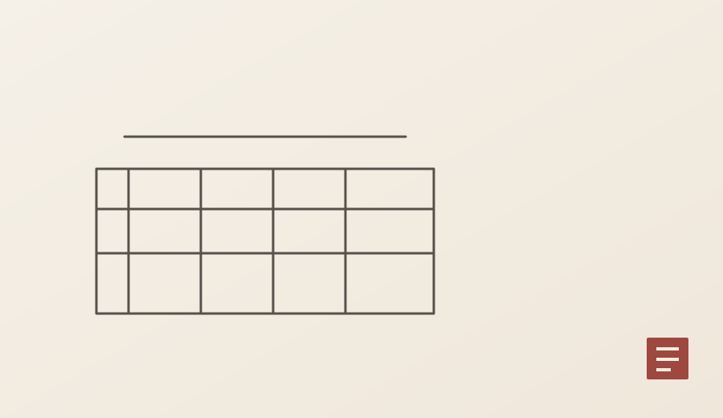

呉門派
沈周・文徴明ら蘇州の文人たちは、詩書画と古典研究を結びつけた穏やかな文人画を育てました。
地域・流派・市場が交差し、絵画の選択肢が一気に広がる。
浙派・呉門派・宮廷画家・個性派など、多様な潮流が並存。文人画の理論、都市文化、収蔵と市場も大きく発展しました。

専門用語を先に暗記するより、まず「何が変わった時代なのか」を3つの視点から見ると、代表作品や画家の違いが理解しやすくなります。

沈周・文徴明ら蘇州の文人たちは、詩書画と古典研究を結びつけた穏やかな文人画を育てました。

戴進・呉偉らの力強い筆墨や、宮廷での人物・花鳥表現など、文人画とは異なる潮流も活発でした。

徐渭や陳洪綬など個性的な画家が現れ、都市の収蔵文化と書画市場も広がりました。
浙派・呉門派・宮廷画家・個性派など、多様な潮流が並存。文人画の理論、都市文化、収蔵と市場も大きく発展しました。
作品を見る際は、まず全体の構図と余白を見て、その後に筆線・墨色・設色・人物や建築の細部へ視線を移してみてください。同じ題材でも、時代によって「何を大切にしたか」が異なります。
画家名は日本語で一般的な旧字体・慣用表記を中心に整理しています。生没年・帰属に議論がある場合は断定を避けます。
現在、この時代に関連づけて掲載している販売作品はありません。知識ページは商品在庫とは独立して継続公開します。